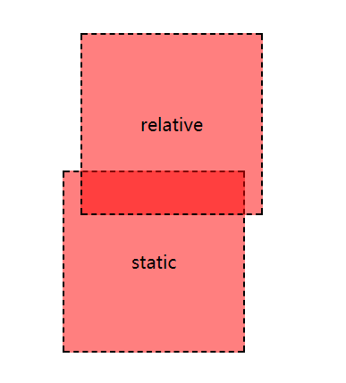
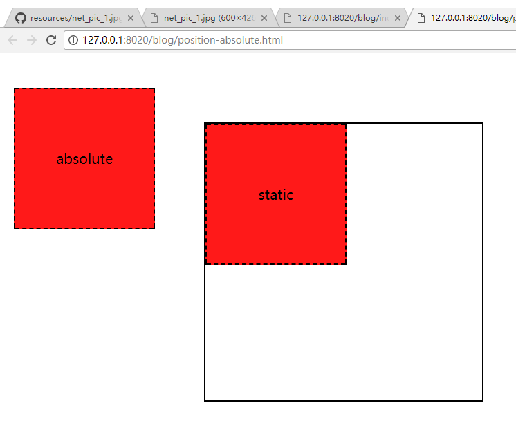
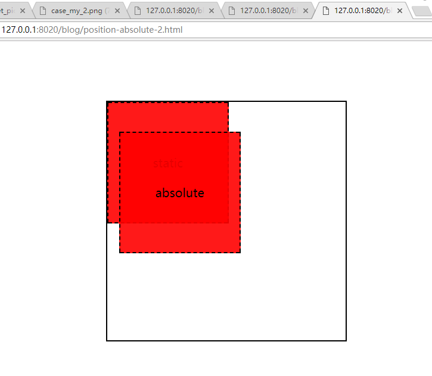
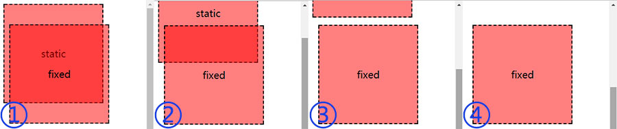

<!DOCTYPE html><html><head><meta charset="utf-8"><title>定位布局的三种运用 | 技术学派</title><meta name="viewport" content="width=device-width,initial-scale=1,maximum-scale=1"><meta name="keywords" content="IT培训, Python, 大数据, 人工智能, Web前端, PHP, "><meta name="description" content="定位布局的三种运用2017-11-27说到定位布局，自然而然会想起position，会想到position 的三种属性值：relative 、absolute 、fixed ;实际上还有另外一种属性：static ，咦？这是啥玩意，我咋没见过呢，其实这个定位属性呢，还是position 的默认值呢，就是不定位 ，O(∩_∩)O哈哈~不定位我还写你干啥，所以呢，我们平时是不用static的，我们就好"><meta property="og:type" content="article"><meta property="og:title" content="定位布局的三种运用"><meta property="og:url" content="http://www.JiShuXuePai.com/blog/uncategorized/定位布局的三种运用/index.html"><meta property="og:site_name" content="技术学派"><meta property="og:description" content="定位布局的三种运用2017-11-27说到定位布局，自然而然会想起position，会想到position 的三种属性值：relative 、absolute 、fixed ;实际上还有另外一种属性：static ，咦？这是啥玩意，我咋没见过呢，其实这个定位属性呢，还是position 的默认值呢，就是不定位 ，O(∩_∩)O哈哈~不定位我还写你干啥，所以呢，我们平时是不用static的，我们就好"><meta property="og:locale" content="zh-CN"><meta property="og:image" content="http://www.jishuxuepai.com/blog/uncategorized/定位布局的三种运用/net_pic_1.jpg"><meta property="og:updated_time" content="2018-05-11T08:14:14.240Z"><meta name="twitter:card" content="summary"><meta name="twitter:title" content="定位布局的三种运用"><meta name="twitter:description" content="定位布局的三种运用2017-11-27说到定位布局，自然而然会想起position，会想到position 的三种属性值：relative 、absolute 、fixed ;实际上还有另外一种属性：static ，咦？这是啥玩意，我咋没见过呢，其实这个定位属性呢，还是position 的默认值呢，就是不定位 ，O(∩_∩)O哈哈~不定位我还写你干啥，所以呢，我们平时是不用static的，我们就好"><meta name="twitter:image" content="http://www.jishuxuepai.com/blog/uncategorized/定位布局的三种运用/net_pic_1.jpg"><link rel="stylesheet" href="/libs/bootstrap/bootstrap-grid.css"><link rel="stylesheet" href="/libs/font-awesome/css/font-awesome.min.css"><link rel="stylesheet" href="/libs/titillium-web/styles.css"><link rel="stylesheet" href="/libs/source-code-pro/styles.css"><link rel="stylesheet" href="/css/style.css"><script src="/libs/jquery/jquery.min.js"></script><link rel="stylesheet" href="/libs/lightgallery/css/lightgallery.min.css"><link rel="stylesheet" href="/libs/justified-gallery/justifiedGallery.min.css"><script>var _hmt=_hmt||[];!function(){var e=document.createElement("script");e.src="//hm.baidu.com/hm.js?4c1bd812de3c30edbaa2b803c66f0a04";var t=document.getElementsByTagName("script")[0];t.parentNode.insertBefore(e,t)}()</script></head></html><body><div id="wrap"><header id="header"><div id="header-outer" class="outer"><div class="container"><div class="container-inner"><div id="header-title"><h1 class="logo-wrap"><a href="/" class="logo"></a></h1></div><div id="header-inner" class="nav-container"><a id="main-nav-toggle" class="nav-icon fa fa-bars">菜单</a><div class="nav-container-inner"><ul id="main-nav"><li class="main-nav-list-item"><a class="main-nav-list-link" href="/">主页</a></li><li class="main-nav-list-item"><a class="main-nav-list-link" href="/edu/index.html">学编程</a></li><li class="main-nav-list-item"><a class="main-nav-list-link" href="/blog/">博客</a></li><li class="main-nav-list-item"><a class="main-nav-list-link" href="/tips.html">学习建议</a></li><li class="main-nav-list-item"><a class="main-nav-list-link" href="/about.html">关于</a></li></ul><nav id="sub-nav"><div id="search-form-wrap"><form class="search-form"><input type="text" class="ins-search-input search-form-input" placeholder="搜索"> <button type="submit" class="search-form-submit"></button></form><div class="ins-search"><div class="ins-search-mask"></div><div class="ins-search-container"><div class="ins-input-wrapper"><input type="text" class="ins-search-input" placeholder="想要查找什么..."> <span class="ins-close ins-selectable"><i class="fa fa-times-circle"></i></span></div><div class="ins-section-wrapper"><div class="ins-section-container"></div></div></div></div><script>window.INSIGHT_CONFIG={TRANSLATION:{POSTS:"文章",PAGES:"页面",CATEGORIES:"分类",TAGS:"标签",UNTITLED:"(未命名)"},ROOT_URL:"/",CONTENT_URL:"/content.json"}</script><script src="/js/insight.js"></script></div></nav></div></div></div></div></div></header><div class="container"><div class="main-body container-inner"><div class="main-body-inner"><section id="main"><div class="main-body-header"><h1 class="header">未分类<div class="author">刘登科</div></h1></div><div class="main-body-content"><article id="post-定位布局的三种运用" class="article article-single article-type-post" itemscope itemprop="blogPost"><div class="article-inner"><header class="article-header"><h1 class="article-title" itemprop="name">定位布局的三种运用</h1></header><div class="article-meta"><div class="article-date"><a href="/blog/uncategorized/定位布局的三种运用/" class="article-date"><time datetime="2018-05-11T08:14:14.240Z" itemprop="datePublished">2018-05-11</time></a></div></div><div class="article-entry" itemprop="articleBody"><h3 id="定位布局的三种运用"><a href="#定位布局的三种运用" class="headerlink" title="定位布局的三种运用"></a>定位布局的三种运用</h3><p>2017-11-27</p><hr><p>说到定位布局，自然而然会想起<code>position</code>，会想到<code>position</code> 的三种属性值：<code>relative</code> 、<code>absolute</code> 、<code>fixed</code> ;实际上还有另外一种属性：<code>static</code> ，咦？这是啥玩意，我咋没见过呢，其实这个定位属性呢，还是<code>position</code> 的默认值呢，就是<strong><em>不定位</em></strong> ，O(∩_∩)O哈哈~</p><p>不定位我还写你干啥，所以呢，我们平时是不用<code>static</code>的，我们就好好说说我们的常用的三种属性值<code>relative</code> 、<code>absolute</code> 、<code>fixed</code> 。</p><h4 id="relative：相对定位"><a href="#relative：相对定位" class="headerlink" title="relative：相对定位"></a>relative：相对定位</h4><p>relative相对定位，那么相对于谁定位呢，就是相对于它本身啦，relative是一个很贪心的孩子，占着碗里的还看着锅里的，定位了，还不放弃自己原有的位子╭(╯^╰)╮；为什么它这么霸道呢，因为它自己原来的位置是它的定位基点，它要相对于它原来的位置进行定位。下面我们来看一下效果喽：</p><figure class="highlight html"><table><tr><td class="gutter"><pre><span class="line">1</span><br><span class="line">2</span><br></pre></td><td class="code"><pre><span class="line"><span class="tag">&lt;<span class="name">div</span> <span class="attr">class</span>=<span class="string">"box relative"</span>&gt;</span>relative<span class="tag">&lt;/<span class="name">div</span>&gt;</span></span><br><span class="line"><span class="tag">&lt;<span class="name">div</span> <span class="attr">class</span>=<span class="string">"box"</span>&gt;</span>static<span class="tag">&lt;/<span class="name">div</span>&gt;</span></span><br></pre></td></tr></table></figure><figure class="highlight css"><table><tr><td class="gutter"><pre><span class="line">1</span><br><span class="line">2</span><br><span class="line">3</span><br><span class="line">4</span><br><span class="line">5</span><br><span class="line">6</span><br><span class="line">7</span><br><span class="line">8</span><br><span class="line">9</span><br><span class="line">10</span><br><span class="line">11</span><br><span class="line">12</span><br><span class="line">13</span><br><span class="line">14</span><br></pre></td><td class="code"><pre><span class="line"><span class="selector-class">.box</span>&#123;</span><br><span class="line">  <span class="attribute">width</span>: <span class="number">200px</span>;</span><br><span class="line">  <span class="attribute">height</span>: <span class="number">200px</span>;</span><br><span class="line">  <span class="attribute">border</span>: <span class="number">2px</span> dashed <span class="number">#000</span>;</span><br><span class="line">  <span class="attribute">background-color</span>:<span class="built_in">rgba</span>(255,0,0,0.5);</span><br><span class="line">  <span class="attribute">line-height</span>: <span class="number">200px</span>;</span><br><span class="line">  <span class="attribute">text-align</span>: center;</span><br><span class="line">  <span class="attribute">font-size</span>: <span class="number">20px</span>;</span><br><span class="line">&#125;</span><br><span class="line"><span class="selector-class">.relative</span>&#123;</span><br><span class="line">  <span class="attribute">position</span>: relative;</span><br><span class="line">  <span class="attribute">left</span>: <span class="number">20px</span>;</span><br><span class="line">  <span class="attribute">top</span>: <span class="number">50px</span>;</span><br><span class="line">&#125;</span><br></pre></td></tr></table></figure><p><em>效果如下：</em></p><p></p><p>通过上图可以看出来，<code>relative</code> 真是太贪心了是不是？</p><h4 id="absolute：绝对定位"><a href="#absolute：绝对定位" class="headerlink" title="absolute：绝对定位"></a>absolute：绝对定位</h4><p>相对于relative来说，咱们的<code>absolute</code> 就没有那么贪心啦，但是呢，比较淘气，可以脱离文档流快乐的玩耍。但是也不是没有任何约束的，绝对定位的定位方式是相对于它最近的定位元素来定位的（position: static是不算的！），如果没有定位的祖先元素，它就霸气的按照<code>&lt;body&gt;</code> 来定位啦，说的这么绕，听不懂肿么办？话不多说，上demo！</p><figure class="highlight html"><table><tr><td class="gutter"><pre><span class="line">1</span><br><span class="line">2</span><br><span class="line">3</span><br><span class="line">4</span><br><span class="line">5</span><br></pre></td><td class="code"><pre><span class="line"><span class="comment">&lt;!-- 无已定位的祖先元素 --&gt;</span></span><br><span class="line"><span class="tag">&lt;<span class="name">div</span> <span class="attr">class</span>=<span class="string">"wrap"</span>&gt;</span></span><br><span class="line">  <span class="tag">&lt;<span class="name">div</span> <span class="attr">class</span>=<span class="string">"box absolute"</span>&gt;</span>absolute<span class="tag">&lt;/<span class="name">div</span>&gt;</span></span><br><span class="line">  <span class="tag">&lt;<span class="name">div</span> <span class="attr">class</span>=<span class="string">"box"</span>&gt;</span>static<span class="tag">&lt;/<span class="name">div</span>&gt;</span></span><br><span class="line"><span class="tag">&lt;/<span class="name">div</span>&gt;</span></span><br></pre></td></tr></table></figure><figure class="highlight css"><table><tr><td class="gutter"><pre><span class="line">1</span><br><span class="line">2</span><br><span class="line">3</span><br><span class="line">4</span><br><span class="line">5</span><br><span class="line">6</span><br><span class="line">7</span><br><span class="line">8</span><br><span class="line">9</span><br><span class="line">10</span><br><span class="line">11</span><br><span class="line">12</span><br><span class="line">13</span><br><span class="line">14</span><br><span class="line">15</span><br><span class="line">16</span><br><span class="line">17</span><br><span class="line">18</span><br><span class="line">19</span><br><span class="line">20</span><br><span class="line">21</span><br></pre></td><td class="code"><pre><span class="line"><span class="comment">/*无已定位的祖先元素*/</span></span><br><span class="line"><span class="selector-class">.wrap</span>&#123;</span><br><span class="line">  <span class="attribute">width</span>: <span class="number">400px</span>;</span><br><span class="line">  <span class="attribute">height</span>: <span class="number">400px</span>;</span><br><span class="line">  <span class="attribute">border</span>:<span class="number">2px</span> solid <span class="number">#000</span>;</span><br><span class="line">  <span class="attribute">margin</span>: <span class="number">100px</span> auto;</span><br><span class="line">&#125;</span><br><span class="line"><span class="selector-class">.box</span>&#123;</span><br><span class="line">  <span class="attribute">width</span>: <span class="number">200px</span>;</span><br><span class="line">  <span class="attribute">height</span>: <span class="number">200px</span>;</span><br><span class="line">  <span class="attribute">border</span>: <span class="number">2px</span> dashed <span class="number">#000</span>;</span><br><span class="line">  <span class="attribute">background-color</span>:<span class="built_in">rgba</span>(255,0,0,0.9);</span><br><span class="line">  <span class="attribute">line-height</span>: <span class="number">200px</span>;</span><br><span class="line">  <span class="attribute">text-align</span>: center;</span><br><span class="line">  <span class="attribute">font-size</span>: <span class="number">20px</span>;</span><br><span class="line">&#125;</span><br><span class="line"><span class="selector-class">.absolute</span>&#123;</span><br><span class="line">  <span class="attribute">position</span>: absolute;</span><br><span class="line">  <span class="attribute">left</span>: <span class="number">20px</span>;</span><br><span class="line">  <span class="attribute">top</span>: <span class="number">50px</span>;</span><br><span class="line">&#125;</span><br></pre></td></tr></table></figure><p><em>效果如下：</em></p><p></p><p>我们明明让它向下向右定位的，它竟然跑偏了，好气呀！</p><p>莫气，莫气，这是因为没有已定位的祖先元素约束它，没人管，它就浪开了，相对于<code>&lt;body&gt;</code> 进行绝对定位啦，那么接下来我们就管管它。</p><figure class="highlight html"><table><tr><td class="gutter"><pre><span class="line">1</span><br><span class="line">2</span><br><span class="line">3</span><br><span class="line">4</span><br></pre></td><td class="code"><pre><span class="line"><span class="tag">&lt;<span class="name">div</span> <span class="attr">class</span>=<span class="string">"wrap"</span>&gt;</span><span class="comment">&lt;!-- 定位的祖先元素 --&gt;</span></span><br><span class="line">  <span class="tag">&lt;<span class="name">div</span> <span class="attr">class</span>=<span class="string">"box absolute"</span>&gt;</span>absolute<span class="tag">&lt;/<span class="name">div</span>&gt;</span></span><br><span class="line">  <span class="tag">&lt;<span class="name">div</span> <span class="attr">class</span>=<span class="string">"box"</span>&gt;</span>static<span class="tag">&lt;/<span class="name">div</span>&gt;</span></span><br><span class="line"><span class="tag">&lt;/<span class="name">div</span>&gt;</span></span><br></pre></td></tr></table></figure><figure class="highlight css"><table><tr><td class="gutter"><pre><span class="line">1</span><br><span class="line">2</span><br><span class="line">3</span><br><span class="line">4</span><br><span class="line">5</span><br><span class="line">6</span><br><span class="line">7</span><br><span class="line">8</span><br><span class="line">9</span><br><span class="line">10</span><br><span class="line">11</span><br><span class="line">12</span><br><span class="line">13</span><br><span class="line">14</span><br><span class="line">15</span><br><span class="line">16</span><br><span class="line">17</span><br><span class="line">18</span><br><span class="line">19</span><br><span class="line">20</span><br><span class="line">21</span><br></pre></td><td class="code"><pre><span class="line"><span class="selector-class">.wrap</span>&#123;</span><br><span class="line">  <span class="attribute">position</span>: relative;<span class="comment">/*祖先元素的定位样式*/</span></span><br><span class="line">  <span class="attribute">width</span>: <span class="number">400px</span>;</span><br><span class="line">  <span class="attribute">height</span>: <span class="number">400px</span>;</span><br><span class="line">  <span class="attribute">border</span>:<span class="number">2px</span> solid <span class="number">#000</span>;</span><br><span class="line">  <span class="attribute">margin</span>: <span class="number">100px</span> auto;</span><br><span class="line">&#125;</span><br><span class="line"><span class="selector-class">.box</span>&#123;</span><br><span class="line">  <span class="attribute">width</span>: <span class="number">200px</span>;</span><br><span class="line">  <span class="attribute">height</span>: <span class="number">200px</span>;</span><br><span class="line">  <span class="attribute">border</span>: <span class="number">2px</span> dashed <span class="number">#000</span>;</span><br><span class="line">  <span class="attribute">background-color</span>:<span class="built_in">rgba</span>(255,0,0,0.9);</span><br><span class="line">  <span class="attribute">line-height</span>: <span class="number">200px</span>;</span><br><span class="line">  <span class="attribute">text-align</span>: center;</span><br><span class="line">  <span class="attribute">font-size</span>: <span class="number">20px</span>;</span><br><span class="line">&#125;</span><br><span class="line"><span class="selector-class">.absolute</span>&#123;</span><br><span class="line">  <span class="attribute">position</span>: absolute;</span><br><span class="line">  <span class="attribute">left</span>: <span class="number">20px</span>;</span><br><span class="line">  <span class="attribute">top</span>: <span class="number">50px</span>;</span><br><span class="line">&#125;</span><br></pre></td></tr></table></figure><p><em>效果如下：</em></p><p></p><p>这下有祖先管着它啦，不嘚瑟了吧！</p><h4 id="fixed-：固定定位"><a href="#fixed-：固定定位" class="headerlink" title="fixed ：固定定位"></a>fixed ：固定定位</h4><p>说完了霸气的相对定位，讲罢了淘气的绝对定位，接下来我们要聊一聊高冷的固定定位，为什么说<code>fixed</code> 高冷呢，因为它是相对于浏览器窗口进行定位的，它的定位位置和文档、祖先元素都没有关系，页面怎么滚动，你爱咋咋地，它就认准了一个地方不再移动，任尔上下划鼠标，我就只在这儿飘，嘿嘿。</p><figure class="highlight html"><table><tr><td class="gutter"><pre><span class="line">1</span><br><span class="line">2</span><br></pre></td><td class="code"><pre><span class="line"><span class="tag">&lt;<span class="name">div</span> <span class="attr">class</span>=<span class="string">"box fixed"</span>&gt;</span>fixed<span class="tag">&lt;/<span class="name">div</span>&gt;</span></span><br><span class="line"><span class="tag">&lt;<span class="name">div</span> <span class="attr">class</span>=<span class="string">"box"</span>&gt;</span>static<span class="tag">&lt;/<span class="name">div</span>&gt;</span></span><br></pre></td></tr></table></figure><figure class="highlight css"><table><tr><td class="gutter"><pre><span class="line">1</span><br><span class="line">2</span><br><span class="line">3</span><br><span class="line">4</span><br><span class="line">5</span><br><span class="line">6</span><br><span class="line">7</span><br><span class="line">8</span><br><span class="line">9</span><br><span class="line">10</span><br><span class="line">11</span><br><span class="line">12</span><br><span class="line">13</span><br><span class="line">14</span><br><span class="line">15</span><br><span class="line">16</span><br><span class="line">17</span><br></pre></td><td class="code"><pre><span class="line"><span class="selector-tag">body</span>&#123;</span><br><span class="line">  <span class="attribute">height</span>: <span class="number">1000px</span>;</span><br><span class="line">&#125;</span><br><span class="line"><span class="selector-class">.box</span>&#123;</span><br><span class="line">  <span class="attribute">width</span>: <span class="number">200px</span>;</span><br><span class="line">  <span class="attribute">height</span>: <span class="number">200px</span>;</span><br><span class="line">  <span class="attribute">border</span>: <span class="number">2px</span> dashed <span class="number">#000</span>;</span><br><span class="line">  <span class="attribute">background-color</span>:<span class="built_in">rgba</span>(255,0,0,0.5);</span><br><span class="line">  <span class="attribute">line-height</span>: <span class="number">200px</span>;</span><br><span class="line">  <span class="attribute">text-align</span>: center;</span><br><span class="line">  <span class="attribute">font-size</span>: <span class="number">20px</span>;</span><br><span class="line">&#125;</span><br><span class="line"><span class="selector-class">.fixed</span>&#123;</span><br><span class="line">  <span class="attribute">position</span>: fixed;</span><br><span class="line">  <span class="attribute">left</span>: <span class="number">20px</span>;</span><br><span class="line">  <span class="attribute">top</span>: <span class="number">50px</span>;</span><br><span class="line">&#125;</span><br></pre></td></tr></table></figure><p><em>效果如下：</em></p><p></p><p>不管滚动条怎么滚动，高冷的<code>fixed</code> 定位的元素依旧固定在原来的位置，一动未动。</p><h4 id="z-index-：不得不说的堆叠顺序"><a href="#z-index-：不得不说的堆叠顺序" class="headerlink" title="z-index ：不得不说的堆叠顺序"></a>z-index ：不得不说的堆叠顺序</h4><p>不管是<code>relative</code> 、<code>absolute</code> 或是<code>fixed</code> 它们都离开了它们原来的位置，显示在定位后的位置，这就导致了抢镜头的现象，会把其它老老实实待在原地的元素给遮挡掉。</p><p></p><p>如果我们不想让某个元素未定位的元素被遮挡，应该怎么办呢，很简单：给被挡住的元素添加一个<code>relative</code> 相对定位，不需要加定位位置，然后再加一个<code>z-index</code> 属性就好啦！</p><figure class="highlight css"><table><tr><td class="gutter"><pre><span class="line">1</span><br><span class="line">2</span><br><span class="line">3</span><br><span class="line">4</span><br></pre></td><td class="code"><pre><span class="line">&#123;</span><br><span class="line">  <span class="attribute">position</span>:relative;</span><br><span class="line">  <span class="attribute">z-index</span>:<span class="number">2</span>;<span class="comment">/*此处z-index的值要比遮挡住它的定位元素的z-index的值要大才行*/</span></span><br><span class="line">&#125;</span><br></pre></td></tr></table></figure><p><code>z-index</code> 属性的值越大，它对应的位置越靠上，越能实力抢镜！</p><p>对于两个已定位的元素的堆叠顺序调整就更简单啦，只要改变<code>z-index</code> 的值就OK啦。</p></div><footer class="article-footer"><a data-url="http://www.JiShuXuePai.com/blog/uncategorized/定位布局的三种运用/" data-id="cjhr4tvdc000szifykgsegic8" class="article-share-link"><i class="fa fa-share"></i>分享到</a><script>!function(n){n("body").on("click",function(){n(".article-share-box.on").removeClass("on")}).on("click",".article-share-link",function(t){t.stopPropagation();var e,a=n(this),o=a.attr("data-url"),r=encodeURIComponent(o),i="article-share-box-"+a.attr("data-id"),s=a.offset();if(n("#"+i).length){if((e=n("#"+i)).hasClass("on"))return void e.removeClass("on")}else{var l=['<div id="'+i+'" class="article-share-box">','<input class="article-share-input" value="'+o+'">','<div class="article-share-links">','<a href="https://twitter.com/intent/tweet?url='+r+'" class="article-share-twitter" target="_blank" title="Twitter"></a>','<a href="https://www.facebook.com/sharer.php?u='+r+'" class="article-share-facebook" target="_blank" title="Facebook"></a>','<a href="http://pinterest.com/pin/create/button/?url='+r+'" class="article-share-pinterest" target="_blank" title="Pinterest"></a>','<a href="https://plus.google.com/share?url='+r+'" class="article-share-google" target="_blank" title="Google+"></a>',"</div>","</div>"].join("");e=n(l),n("body").append(e)}n(".article-share-box.on").hide(),e.css({top:s.top+25,left:s.left}).addClass("on")}).on("click",".article-share-box",function(t){t.stopPropagation()}).on("click",".article-share-box-input",function(){n(this).select()}).on("click",".article-share-box-link",function(t){t.preventDefault(),t.stopPropagation(),window.open(this.href,"article-share-box-window-"+Date.now(),"width=500,height=450")})}(jQuery)</script></footer></div></article><section id="comments"><div id="gitalk_frame"></div></section></div></section><aside id="sidebar"><a class="sidebar-toggle" title="Expand Sidebar"><i class="toggle icon"></i></a><div class="sidebar-top"><p>关注我 :</p><ul class="social-links"><li><a class="social-tooltip" title="火星时代" href="http://edu.hxsd.com/edunew/topics/webfull/index.html" target="_blank"><i class="icon fa fa-dribbble"></i></a></li><li><a class="social-tooltip" title="weibo" href="#" target="_blank"><i class="icon fa fa-weibo"></i></a></li><li><a class="social-tooltip" title="rss" href="/atom.xml" target="_blank"><i class="icon fa fa-rss"></i></a></li></ul></div><nav id="article-nav"><a href="/blog/学习答疑/学习答疑/2018 最具就业前景的编程语言，转行者了解一下/" id="article-nav-newer" class="article-nav-link-wrap"><strong class="article-nav-caption">下一篇</strong><p class="article-nav-title">2018 最具就业前景的编程语言，转行者了解一下</p><i class="icon fa fa-chevron-right" id="icon-chevron-right"></i> </a><a href="/blog/uncategorized/五星文章收集/" id="article-nav-older" class="article-nav-link-wrap"><strong class="article-nav-caption">上一篇</strong><p class="article-nav-title">五星文章收集</p><i class="icon fa fa-chevron-left" id="icon-chevron-left"></i></a></nav><div class="widgets-container"><div class="widget-wrap widget-list"><h3 class="widget-title">分类</h3><div class="widget"><ul class="category-list"><li class="category-list-item"><a class="category-list-link" href="/categories/animate/">animate</a><span class="category-list-count">17</span></li><li class="category-list-item"><a class="category-list-link" href="/categories/git/">git</a><span class="category-list-count">1</span></li><li class="category-list-item"><a class="category-list-link" href="/categories/html/">html</a><span class="category-list-count">2</span></li><li class="category-list-item"><a class="category-list-link" href="/categories/js/">js</a><span class="category-list-count">5</span></li><li class="category-list-item"><a class="category-list-link" href="/categories/php/">php</a><span class="category-list-count">3</span></li><li class="category-list-item"><a class="category-list-link" href="/categories/vue/">vue</a><span class="category-list-count">1</span></li><li class="category-list-item"><a class="category-list-link" href="/categories/学习答疑/">学习答疑</a><span class="category-list-count">18</span></li><li class="category-list-item"><a class="category-list-link" href="/categories/插件资源库/">插件资源库</a><span class="category-list-count">4</span></li></ul></div></div><link rel="stylesheet" href="/css/tech/toc.css"><div class="widget-wrap widget-list widget-toc"><h3 class="widget-title">目录</h3><div class="widget"><div class="toc"></div><link rel="stylesheet" href="https://cdnjs.cloudflare.com/ajax/libs/tocbot/3.0.5/tocbot.css"><script src="https://cdnjs.cloudflare.com/ajax/libs/tocbot/3.0.5/tocbot.min.js"></script><script>$(function(){$(".main-body-content").find("h1,h2,h3").each(function(t){$(this).attr("id")||$(this).attr("id","list"+t)}),tocbot.init({tocSelector:".toc",contentSelector:".main-body-content",headingSelector:"h1, h2, h3",collapseDepth:2,positionFixedSelector:".widget-toc",fixedSidebarOffset:595,includeHtml:!1})})</script></div></div><div class="widget-wrap widget-list"><h3 class="widget-title">标签</h3><div class="widget"><ul class="tag-list"><li class="tag-list-item"><a class="tag-list-link" href="/tags/C/">C</a><span class="tag-list-count">1</span></li><li class="tag-list-item"><a class="tag-list-link" href="/tags/python/">python</a><span class="tag-list-count">6</span></li><li class="tag-list-item"><a class="tag-list-link" href="/tags/web前端/">web前端</a><span class="tag-list-count">2</span></li></ul></div></div><div class="widget-wrap widget-float"><h3 class="widget-title">标签云</h3><div class="widget tagcloud"><a href="/tags/C/" style="font-size:10px">C</a> <a href="/tags/python/" style="font-size:20px">python</a> <a href="/tags/web前端/" style="font-size:15px">web前端</a></div></div><div class="widget-wrap widget-list"><h3 class="widget-title">链接</h3><div class="widget"><ul><li><a href="http://edu.hxsd.com/edunew/topics/webfull/index.html">火星时代</a></li></ul></div></div></div></aside><script>$(function(){$(window).scroll(function(){240<=$(document).scrollTop()?($("#sidebar .sidebar-toggle").addClass("fix"),"block"==$("#sidebar .sidebar-toggle").css("display")&&$(".is-position-fixed").css("top","35px")):$("#sidebar .sidebar-toggle").removeClass("fix")})})</script></div></div></div><footer id="footer"><div class="top"><div class="inner"><div class="list"><div class="left clearfix"><dl><dt>关于我们</dt><dd><a href="/about.html" target="_blank">公司简介</a></dd><dd><a href="edu/index.html" target="_blank">联系我们</a></dd></dl><dl><dt>校区攻略</dt><dd><a href="edu/index.html" target="_blank">校区环境</a></dd><dd><a href="edu/index.html" target="_blank">住宿攻略</a></dd><dd><a href="edu/index.html" target="_blank">来校路线</a></dd></dl><dl><dt>课程培训</dt><dd><a href="edu/python.html" target="_blank">Python</a></dd><dd><a href="edu/python.html" target="_blank">Web前端</a></dd><dd><a href="edu/python.html" target="_blank">PHP</a></dd><dd><a href="edu/python.html" target="_blank">人工智能</a></dd><dd><a href="edu/python.html" target="_blank">大数据</a></dd></dl><dl><dt>常见问答</dt><dd><a href="edu/index.html" target="_blank">学费学时</a></dd><dd><a href="edu/index.html" target="_blank">学习方法</a></dd></dl></div></div><div class="tel"><tel>176-0025-8815</tel><span>北京市海淀区杏石口路81号火星时代大厦</span></div><div class="weixin"><div class="w1"> <span>头条号</span></div><div class="w1"> <span>官方微信</span></div></div></div></div><div class="bot">Copyright 2018 技术学派 京ICP备15015508号-3</div></footer><link rel="stylesheet" href="https://unpkg.com/gitalk/dist/gitalk.css"><script src="https://unpkg.com/gitalk/dist/gitalk.min.js"></script><script>var gitalk=new Gitalk({clientID:"2fbbb9980b49019d99a7",clientSecret:"152dd10e83ef6595761ea2185304f9ac8263573f",repo:"jsxp",owner:"li-kang",admin:["li-kang"]});gitalk.render("gitalk_frame")</script><script src="/libs/lightgallery/js/lightgallery.min.js"></script><script src="/libs/lightgallery/js/lg-thumbnail.min.js"></script><script src="/libs/lightgallery/js/lg-pager.min.js"></script><script src="/libs/lightgallery/js/lg-autoplay.min.js"></script><script src="/libs/lightgallery/js/lg-fullscreen.min.js"></script><script src="/libs/lightgallery/js/lg-zoom.min.js"></script><script src="/libs/lightgallery/js/lg-hash.min.js"></script><script src="/libs/lightgallery/js/lg-share.min.js"></script><script src="/libs/lightgallery/js/lg-video.min.js"></script><script src="/libs/justified-gallery/jquery.justifiedGallery.min.js"></script><script src="/js/main.js"></script></div></body>